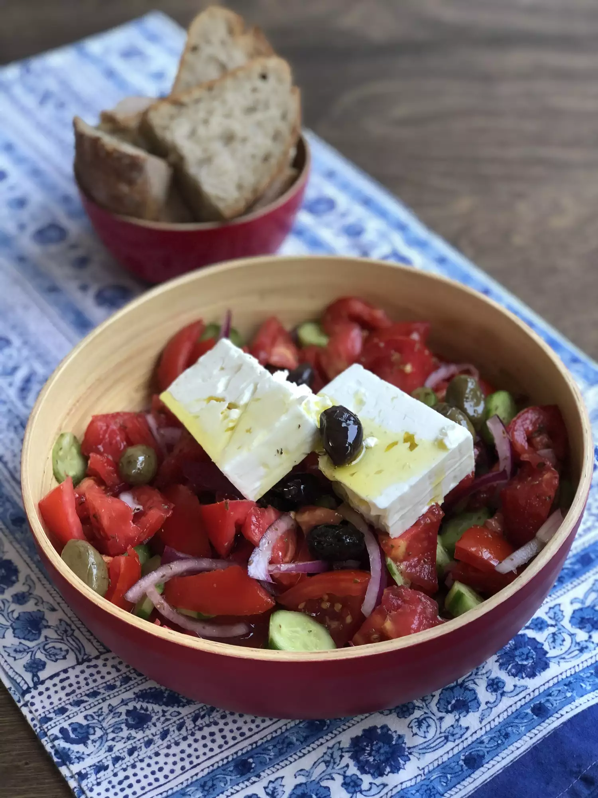

Greek Horiatiki Salad

Description
Yet another of my wonderful stolen recipes from allrecipes.com. I'm going to list the recipe here that I've stolen but may at a later point update it when I make it better. I can already see ways in which I can improve this salad
Ingredients
- 5 large tomatoes
- 1 small red onion, thinly sliced
- Sea salt to taste
- 1 1/2 teaspoons dried oregano
- 1 small green bell pepper, sliced (optional)
- 1/2 medium cucumber, sliced(original recipe says option, but really, NOT optional)
- 1/4 cup Greek black olives
- 3 tablespoons extra-virgin olive oil
- 1 (8 ounce) package feta cheese
Directions
- Cut tomatoes into wedges over a large serving bowl so that any extra juices land in the bowl with tomato wedges. Add onion slices and oregano, then season liberally with salt; mix to combine. Allow tomatoes to sit at room temperature until juices have released, at least 20 to 30 minutes or up to 2 hours.
- Mix in bell pepper, cucumber, and olives just before serving. Top with feta cheese and drizzle with olive oil.